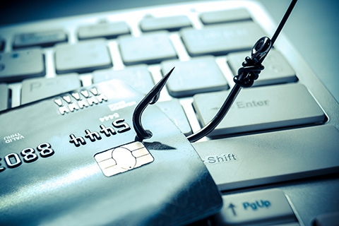

Ide o odstránenie alebo blokovanie ochranných prvkov autorských diel chránených autorským právom a následné šírenie týchto diel zbavených ochrany za účelom zisku.
Ide o neoprávnené vniknutie do cudzieho počítača alebo do cudzieho počítačového systému inou než štandardnou cestou, pri obídení alebo prelomení jeho bezpečnostnej ochrany.
| Metóda útoku | Ako funguje? |
|---|---|
| Útok hrubou silou | Program automaticky skúša všetky možné kombinácie znakov, až kým neuhádne správne heslo. Bezpečné heslo by malo mať aspoň 8 znakov a obsahovať symboly. |
| Slovníkový útok | Útočník skúša postupne všetky slová daného jazyka. Ochrane pomáha heslo, ktoré nie je reálnym slovom (napr. poskladané z prvých písmen nejakej vety). |
| Zadné vrátka (Backdoor) | Útočník do systému nasadí program, ktorý mu umožní kedykoľvek sa pripojiť aj bez znalosti pravého mena a hesla. |
| Odchytenie hesla (Keylogger) | Škodlivý kód zaznamenáva všetko, čo používateľ napíše na klávesnici, a tieto údaje tajne odosiela útočníkovi. |
Krádeže peňazí realizované v online prostredí. Útočníci najčastejšie využívajú tieto tri rafinované formy:

Medzi ostatné výrazné formy patrí napríklad Cybersquatting (špekulatívne registrovanie domén s názvami známych firiem za účelom zisku), Cyberstalking (virtuálne prenasledovanie), počítačové vírusy, spam či škodlivé Dialery, ktoré tajne presmerujú volania na audiotextové čísla s vysokou tarifou.